Universidad de Antioquia
Facultad de Ingeniería — Departamento de Ingeniería de Sistemas
Curso: Fundamentos de Sistemas de Información (2026)
Profesor: Diego José Luis Botia V.
Estudiante: Santiago Jaramillo
Fecha: 25 de noviembre de 2026
Repositorio GitHub: https://github.com/Santiagox01/lab4
Frontend desplegado (Railway): https://lab4-production-052fb297.up.railway.app
Backend desplegado (Railway): https://server-production-75813d16.up.railway.app/health
El presente informe documenta el diseño, construcción iterativa, auditoría de seguridad, despliegue en la nube y verificación funcional del Laboratorio N° 4, aplicando ingeniería asistida por Inteligencia Artificial con revisión arquitectónica continua (sin aceptar cambios a ciegas). Siguiendo los entregables especificados en la Sección 13 de la guía, se construyó LibroYa, una aplicación web full-stack de comercio electrónico para la venta de libros electrónicos (eBooks, PDF, Audiolibros y ediciones impresas + eBook), gestión de catálogo y stock, pasarela de pago verificada en PayPal Sandbox y gestión/seguimiento de envíos en tiempo real.
La arquitectura desacopla por completo la interfaz de usuario del servidor de negocio:
- Frontend (web/): Next.js 15 (App Router), React 19, TypeScript y Tailwind CSS, responsable exclusivamente de la experiencia de usuario y del carrito local, sin rutas API internas ni credenciales secretas.
- Backend (server/): Node.js, Express, TypeScript, Mongoose y Socket.IO en un único proceso persistente encargado de autenticación JWT, control de acceso basado en roles (cliente y administrador), recálculo autoritativo de importes, integración OAuth2/Orders v2 con PayPal Sandbox, máquina de estados explícita para despachos y difusión en vivo vía WebSockets.
- Persistencia en la nube: MongoDB Atlas (libroya), con colecciones users, books, orders y payments.
- Despliegue y pruebas: Servicios separados en Railway (/server y /web), suite de pruebas automatizadas en backend (Vitest + Supertest + MongoMemoryServer + Socket.IO Client, 8/8 suites aprobadas) y evaluación E2E en la nube con TestSprite (Live Web App guiada por PRD.md), logrando corregir un defecto visual real detectado por la suite (CATALOG-003).
La generación de software asistida por IA exige definir previamente contratos de datos, responsabilidades y límites de confianza para evitar vulnerabilidades frecuentes (como validar precios o confirmar pagos desde el navegador). En LibroYa:
1. El navegador nunca decide precios ni estados pagados: Al confirmar una compra, el frontend envía exclusivamente identificadores de libros (bookId), cantidades enteras (quantity), dirección de entrega y método de envío (DIGITAL_INSTANT, STANDARD o EXPRESS). El servidor consulta los precios unitarios y el inventario vigente en MongoDB Atlas y recalcula subtotal, shippingCost y total.
2. Validación en backend de PayPal Sandbox: Solo el servidor posee PAYPAL_CLIENT_SECRET. Tras la aprobación del comprador en el SDK de PayPal, el cliente invoca POST /api/payments/paypal/capture, donde el backend consulta directamente a PayPal v2 Orders API, verifica status === "COMPLETED", moneda USD, importe coincidente y custom_id, descuenta el inventario de forma atómica y promueve el pedido a PAID.
3. WebSockets en el mismo proceso del backend: Al alojar Socket.IO dentro del servidor Express (server/src/socket/io.ts), cada mutación de pago, cambio de estado logístico o ajuste de stock emite notificaciones autenticadas en milisegundos sin requerir consultas continuas (polling) ni infraestructura de mensajería adicional.
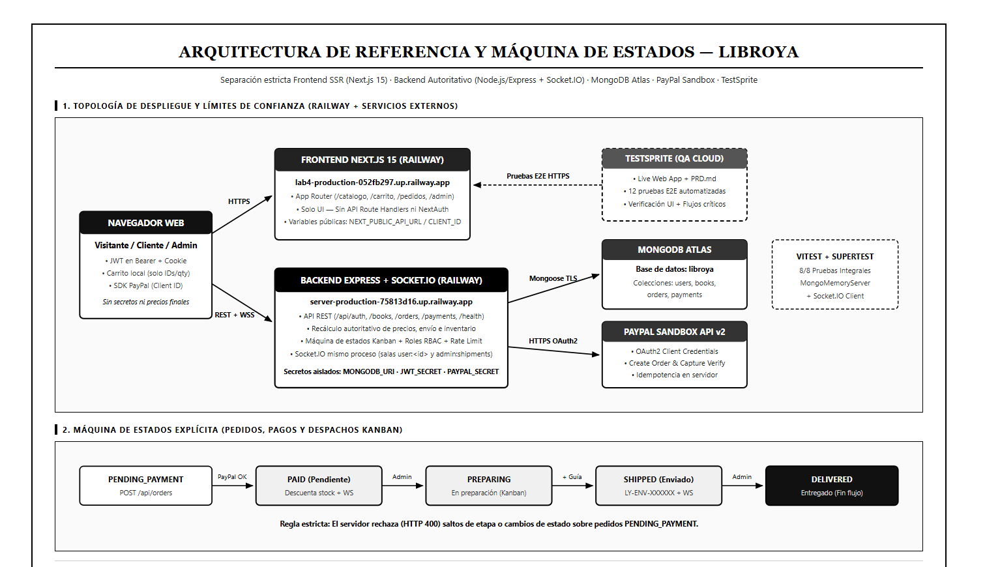
lab4/
├── package.json # Scripts globales (dev, build, test, seed)
├── .gitignore # Excluye .env, .env.local, node_modules, dist, .next
├── .env.example # Referencia raíz sin secretos
├── PRD.md # Requisitos funcionales y criterios para TestSprite
├── README.md # Documentación técnica y guía Railway
├── server/ # Backend Express + Mongoose + Socket.IO + PayPal
│ ├── railway.json # Build/start y healthcheck /health
│ ├── .env.example # Plantilla de variables backend
│ └── src/
│ ├── config/ # Carga de entorno (env.ts) y conexión Atlas (db.ts)
│ ├── models/ # User, Book, Order, Payment
│ ├── middleware/ # JWT auth, requireRole, rateLimit, errorHandler
│ ├── services/ # orderStateMachine.ts, paypalService.ts
│ ├── socket/ # RealtimeHub (Socket.IO autenticado)
│ ├── routes/ # auth, books, orders, payments
│ ├── seed/ # Carga idempotente de usuarios demo, 10 libros y 2 pedidos
│ └── __tests__/ # Suite integral Vitest (api.test.ts)
└── web/ # Frontend Next.js 15 App Router (solo UI)
├── railway.json # Build/start Next.js en 0.0.0.0:$PORT
├── .env.example # Solo NEXT_PUBLIC_API_URL y NEXT_PUBLIC_PAYPAL_CLIENT_ID
├── public/covers/ # 10 portadas editoriales SVG locales
└── src/
├── app/ # /, /catalogo, /login, /registro, /carrito, /checkout/[orderId], /pedidos, /admin
├── components/ # Navbar, BookCard, BookDetailModal, PayPalCheckout, KanbanBoard, CatalogAdminPanel
├── context/ # AuthContext, CartContext
└── lib/ # api.ts, socket.ts, types.ts
libroya)| Colección | Campos principales | Reglas de integridad y seguridad |
|---|---|---|
users |
name, email, passwordHash, role, createdAt, updatedAt |
role ∈ {cliente, administrador}; registro público asigna siempre cliente; passwordHash cifrado con bcryptjs (cost 10), select: false y omitido en toJSON. |
books |
title, author, isbn, description, category, format, price, stock, available, coverUrl, pages, language, publishedYear |
isbn único; price > 0; stock entero >= 0; índice compuesto { category: 1, format: 1, available: 1 }. |
orders |
orderNumber, userId, items[], shippingAddress, shippingMethod, shippingCost, trackingCode, subtotal, total, status, paymentStatus, paypalOrderId, paidAt, shippedAt, deliveredAt |
items guarda snapshot histórico (unitPrice, title, format, quantity, subtotal); totales recalculados exclusivamente en backend. |
payments |
orderId, userId, provider, providerOrderId, captureId, amount, currency, status, payerEmail |
Nunca almacena datos de tarjeta; índices únicos dispersos en providerOrderId y captureId para evitar capturas duplicadas. |
orderStateMachine.ts)Para impedir saltos ilegales desde la interfaz o manipulaciones directas de la API, el servidor gobierna las transiciones mediante la tabla ADMIN_ALLOWED_TRANSITIONS:
- Flujo de pedido y despacho:
PENDING_PAYMENT $\xrightarrow{\text{PayPal CAPTURED}}$ PAID (Pendiente) $\xrightarrow{\text{Admin}}$ PREPARING (En preparación) $\xrightarrow{\text{Admin + guía}}$ SHIPPED (Enviado) $\xrightarrow{\text{Admin}}$ DELIVERED (Entregado).
- Flujo de pago:
PENDING $\rightarrow$ CREATED $\rightarrow$ CAPTURED (o FAILED / CANCELLED con posibilidad de reintento sin duplicar la orden).
- Restricciones activas: El endpoint PATCH /api/orders/:id/status rechaza con HTTP 400 cualquier intento de mover un pedido PENDING_PAYMENT o saltar directamente de PAID a DELIVERED. Al pasar a SHIPPED, si el administrador no digita código de guía, el servidor genera automáticamente LY-ENV-<6 dígitos>.
| Método y Ruta | Propósito | Control de acceso |
|---|---|---|
GET /health |
Estado de API y conexión Atlas | Público; no expone secretos ni URIs |
POST /api/auth/register |
Crear cuenta de cliente | Público (rate-limited); fuerza role: "cliente" |
POST /api/auth/login |
Autenticar usuario y emitir JWT | Público (rate-limited); error genérico 401 |
POST /api/auth/logout |
Limpiar cookie de sesión | Público |
GET /api/auth/me |
Obtener perfil de sesión | Autenticado (401 sin JWT) |
GET /api/books |
Consultar catálogo y filtros | Público (category, format, search, inStock) |
GET /api/books/:id |
Detalle de un título | Público |
POST /api/books |
Crear nuevo libro | Solo administrador (403 para clientes) |
PATCH /api/books/:id |
Editar libro / disponibilidad | Solo administrador; emite stock:updated |
PATCH /api/books/:id/stock |
Ajuste de inventario (stock o delta) |
Solo administrador; rechaza stock < 0; emite stock:updated |
DELETE /api/books/:id |
Eliminar libro del catálogo | Solo administrador |
POST /api/orders |
Crear orden PENDING_PAYMENT |
Autenticado; valida stock y recalcula totales |
GET /api/orders/me |
Historial del cliente autenticado | Autenticado; filtra por userId === req.user.id |
GET /api/orders |
Listar pedidos pagados para Kanban | Solo administrador |
GET /api/orders/:id |
Consultar orden específica | Propietario o administrador (403 otros) |
PATCH /api/orders/:id/status |
Avanzar estado en Kanban | Solo administrador; aplica máquina de estados y emite WS |
POST /api/payments/paypal/order |
Crear orden en PayPal Sandbox | Propietario del pedido; revalida stock |
POST /api/payments/paypal/capture |
Capturar y confirmar compra | Propietario; idempotente; descuenta stock atómicamente |
POST /api/payments/paypal/cancel |
Registrar cancelación en PayPal | Propietario; mantiene PENDING_PAYMENT para reintento |
Socket.IO)El servidor valida el JWT durante el handshake (auth.token, header Authorization o cookie libroya_token) y asigna las salas en el servidor (nunca desde el navegador):
- user:<id>: todos los usuarios autenticados; recibe order:updated y order:statusChanged únicamente de sus propios pedidos (solo ciudad/país, sin exponer dirección completa a terceros).
- admin:shipments: exclusivo para role === "administrador"; recibe order:created al confirmarse un pago y order:statusChanged ante actualizaciones del tablero.
- stock:updated: broadcast de { bookId, stock, available } para mantener sincronizado el catálogo y los tope máximos del carrito.
Siguiendo la lista de auditoría de seguridad (Sección 12.2 de la guía), se verificaron los siguientes controles antes y después del despliegue:
MONGODB_URI, JWT_SECRET y PAYPAL_CLIENT_SECRET existen únicamente en server/.env (excluido por .gitignore) y en las variables privadas del servicio server en Railway. El frontend solo conoce NEXT_PUBLIC_API_URL y NEXT_PUBLIC_PAYPAL_CLIENT_ID. El escaneo sobre los 72 archivos rastreados del repositorio arrojó 0 filtraciones./api/payments/paypal/capture, si la orden o el documento Payment ya figuran en estado CAPTURED, el backend responde inmediatamente 200 { idempotent: true } sin volver a invocar la API de PayPal ni descontar stock por segunda vez. En capturas nuevas, el inventario se decrementa de forma atómica por libro (Book.findOneAndUpdate({ _id, available: true, stock: { $gte: quantity } }, { $inc: { stock: -quantity } })); si cualquier ítem del lote no tiene stock por concurrencia, el servidor revierte los descuentos previos y responde 409 Conflict.helmet() en cabeceras, CORS restringido exactamente a CLIENT_ORIGIN, límite de tasa (express-rate-limit) en /api/auth/login y /api/auth/register, validación estricta de esquemas con zod y escape de metacaracteres en búsquedas textuales con expresiones regulares para prevenir ataques ReDoS.MongoDB Atlas): Clúster xius con base de datos libroya y usuario exclusivo de aplicación. Poblado inicialmente con npm --prefix server run seed (2 cuentas demo ficticias cliente@libroya.com y admin@libroya.com, 10 libros electrónicos incluyendo títulos de stock bajo 3 y agotado 0, y 2 pedidos iniciales para validar historial y Kanban).server en Railway): Root Directory /server, compilación npm install && npm run build, arranque npm start escuchando en 0.0.0.0:$PORT, y healthcheck automático en /health.web en Railway): Root Directory /web, compilación npm install && npm run build (con variables públicas configuradas antes del build), arranque npm start (next start -H 0.0.0.0).| Incidencia observada | Causa raíz diagnosticada | Solución aplicada y verificada |
|---|---|---|
language override unsupported: Español al ejecutar el seed en Atlas |
MongoDB reserva el campo language para el idioma de tokenización en índices text (title/author/description). |
Se reemplazó el índice text por { category: 1, format: 1, available: 1 } en Book.ts y se sincronizaron índices con Book.syncIndexes(). |
[BOOTSTRAP ERROR] Could not connect to any servers in your MongoDB Atlas cluster en Railway |
Network Access de Atlas solo autorizaba la IP local de desarrollo y bloqueaba las IPs dinámicas de salida de Railway. | Se autorizó acceso controlado en Atlas Network Access y se redesplegó server, confirmando "db": "connected" en /health. |
Error de solicitud (404) al abrir el frontend desplegado |
NEXT_PUBLIC_API_URL fue ingresada inicialmente sin prefijo https://, haciendo que fetch apuntara a rutas inexistentes dentro de Next.js. |
Se corrigió a https://server-production-75813d16.up.railway.app (y CLIENT_ORIGIN en server a https://lab4-production-052fb297.up.railway.app) y se redesplegó web. |
PRD.md, VITEST Y TESTSPRITE)Vitest + Supertest + Socket.IO)Se implementaron 8 suites integrales en server/src/__tests__/api.test.ts ejecutadas contra mongodb-memory-server, un gateway mockeado de PayPal y clientes reales de socket.io-client. Todas (8/8 — 100%) pasaron tras la compilación final:
1. GET /health y catálogo público sin sesión con filtros por categoría y disponibilidad.
2. Registro con rol forzado a cliente (bloquea escalada a administrador), hash bcrypt y ocultamiento de passwordHash.
3. Bloqueo de rutas protegidas para anónimos (401) y rechazo 403 para clientes sobre consola admin y stock.
4. Recálculo autoritativo de precios/envío en servidor (ignora unitPrice/total manipulados) y rechazo 400/409 por cantidades negativas, direcciones vacías o stock insuficiente.
5. Aislamiento por propiedad entre clientes (403 al consultar o intentar pagar pedido ajeno).
6. Flujo PayPal completo: cancelación controlada sin descuento de stock, rechazo 400 ante discrepancia de importe, captura verificada con descuento atómico e idempotencia (idempotent: true con una sola llamada a captura).
7. Máquina de estados Kanban (PAID -> PREPARING -> SHIPPED -> DELIVERED), rechazo 400 ante saltos ilegales o pedidos no pagados, generación de guía y ajuste de stock administrativo.
8. WebSockets autenticados: rechazo de handshake sin JWT, entrega en tiempo real de order:created al admin y order:updated / order:statusChanged exclusivamente al cliente propietario (0 fugas a terceros).
Se cargó PRD.md en TestSprite bajo modalidad Live Web App (Frontend UI) sobre https://lab4-production-052fb297.up.railway.app con cuenta de prueba cliente@libroya.com. En la ejecución Run: Nov 25, 12:52 AM (ID 0ca656c3-b327-4107-b461-a46cc7c60593) se obtuvieron los siguientes resultados:
10 aprobadas · 2 fallidas · 0 bloqueadas · 12 totales).| ID | Caso de Prueba (TestSprite) | Categoría | Estado | Observación / Diagnóstico |
|---|---|---|---|---|
CATALOG-001 |
Text search filters the catalog by author, title and ISBN | Catalog | Failed | Falso positivo (Test problem): Búsqueda por autor, título, ISBN, sin resultados y "Limpiar filtros" funcionaron; la aserción final no scrolleó para ver el último libro del catálogo. |
CATALOG-002 |
Category, format and "Solo con stock" filters narrow the catalog | Catalog | Passed | Filtros combinados coherentes con disponibilidad real. |
CATALOG-003 |
Sold-out books block purchase and low-stock books show a warning | Catalog | Failed | Defecto real UI (Prioridad Alta): El badge largo "Edición Impresa + eBook" en top-3 solapaba el aviso de stock en top-3 y ocultaba el número ("Últimas uds." en vez de "Últimas 3 uds."). Corregido. |
CATALOG-004 |
Book details modal shows full data and adds the book to the cart | Catalog | Passed | Modal despliega metadatos completos y añade correctamente al carrito. |
CART-SHIPPI-001 |
Cart recalculates subtotal and total for quantities and shipping methods | Cart & shipping | Passed | Cálculo exacto de subtotal y tarifas de envío. |
CART-SHIPPI-002 |
Cart quantity cannot exceed the available stock | Cart & shipping | Passed | Tope máximo respetado según stock del backend. |
ORDERS-CH-001 |
Confirming the cart creates a pending order with a server-calculated checkout | Orders & checkout | Passed | Orden creada con total recalculado y vista checkout operativa. |
ORDERS-CH-002 |
Order cannot be confirmed without a delivery address | Orders & checkout | Passed | Validación bloquea direcciones vacías. |
ORDERS-CH-003 |
A pending order can be reopened from My orders to retry payment | Orders & checkout | Passed | Recuperación fluida desde /pedidos hacia /checkout/[orderId]. |
ACCESS-ROL-001 |
Customer opening the admin console sees an access-denied screen | Access & roles | Passed | Pantalla Acceso denegado (403) verificada para rol cliente. |
ACCESS-ROL-002 |
Sign-in with wrong credentials shows the generic error | Access & roles | Passed | Mensaje seguro "Credenciales inválidas.". |
NAVIGATION-001 |
Reloading internal pages keeps the page and the session | Navigation & session | Passed | Persistencia de rutas y sesión JWT tras recarga. |
CATALOG-003 y Decisión de Liberacióncommit 4562259): En web/src/components/BookCard.tsx, se reubicó la insignia de stock a la esquina inferior derecha (bottom-3 right-3) con whitespace-nowrap, data-testid="stock-badge" y renderizado en un único nodo de texto {`Últimas ${book.stock} uds.`}, evitando colisión visual con formatos extensos como "Edición Impresa + eBook". Se compiló (npm --prefix web run build), se subió a GitHub y se verificó visualmente en el despliegue actualizado de Railway (ver Figura 02_catalogo_completo.png).default (cliente@libroya.com), quedando la captura interactiva dentro del popup externo de PayPal y el tablero Kanban administrativo verificados mediante la suite Vitest (8/8) y pruebas autenticadas directas en el entorno desplegado de Railway./)Presentación de LibroYa en Railway con acceso directo al catálogo, inicio de sesión, registro y títulos destacados cargados desde MongoDB Atlas.
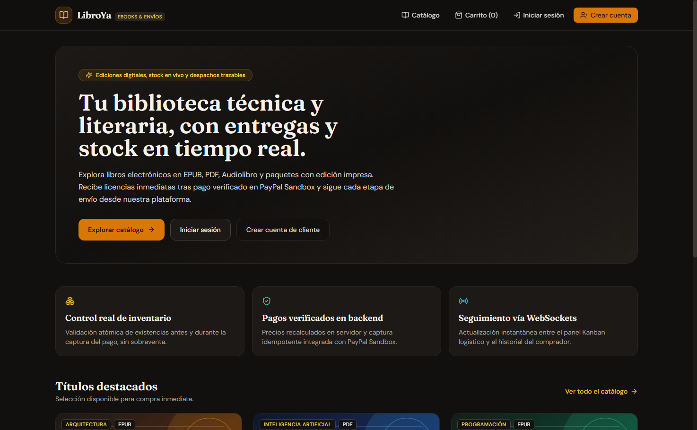
CATALOG-003 Verificada (/catalogo)Visualización del catálogo en vivo tras el despliegue del commit 4562259. Se observa claramente la insignia "Últimas 3 uds." en la esquina inferior derecha de MongoDB Atlas y Modelado Orientado a Eventos sin solaparse con "Edición Impresa + eBook", junto con las insignias "Stock: 16", "Stock: 9" y el inicio de Algoritmos del Sur (Edición Impresa + eBook).
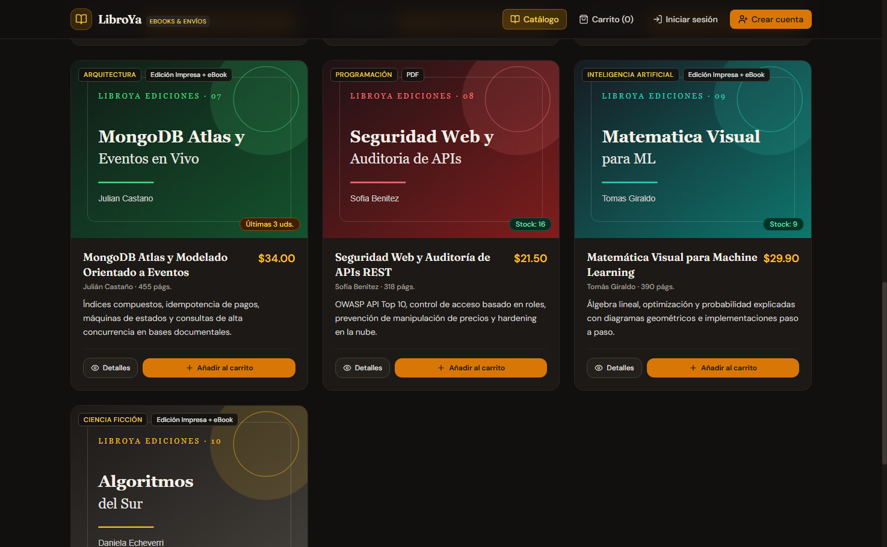
Filtrado reactivo por categoría Arquitectura junto con el modal de especificaciones técnicas (ISBN, páginas, idioma, año y stock disponible).
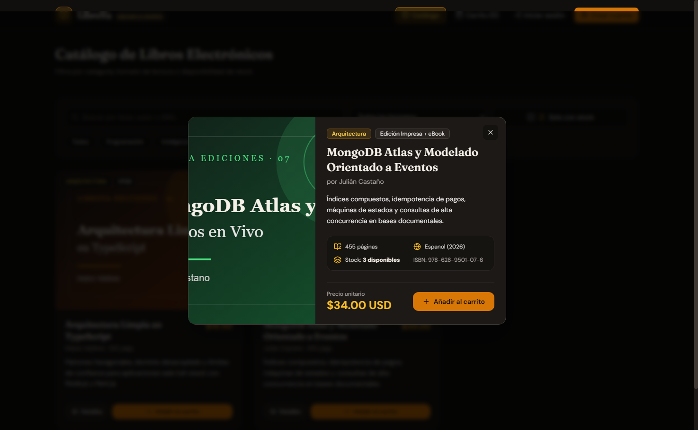
/login)Formulario de autenticación con verificación JWT y panel de cuentas Sandbox de demostración diferenciadas por rol.
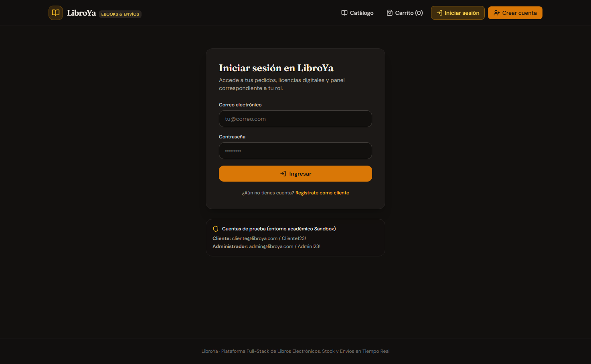
/carrito)Gestión de cantidades limitada por stock real, selección de modalidad de entrega (Digital Instantáneo, Estándar, Express) y formulario de dirección validado antes de enviar POST /api/orders.
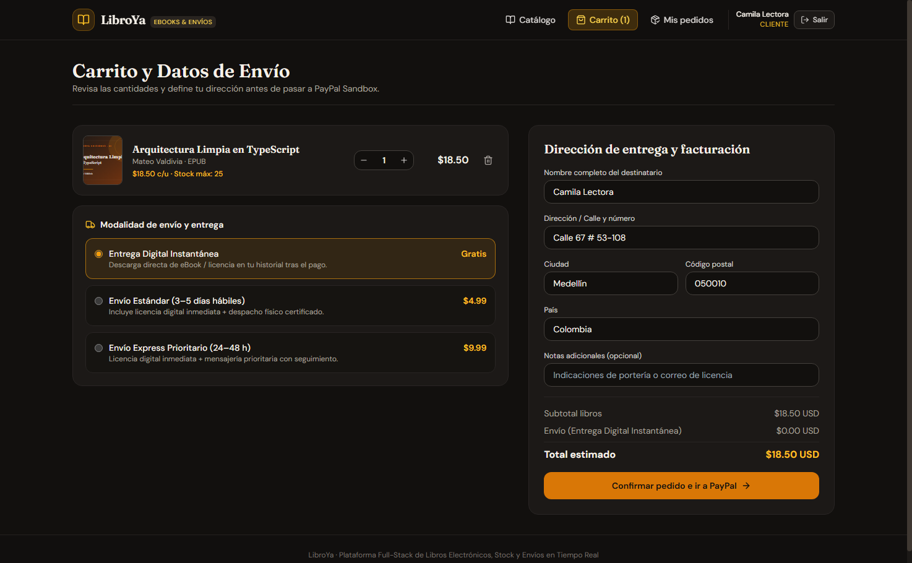
/checkout/[orderId])Vista autoritativa donde el total es recalculado por el backend y se renderizan los botones oficiales del SDK de PayPal Sandbox listos para aprobación y captura verificada en el servidor.
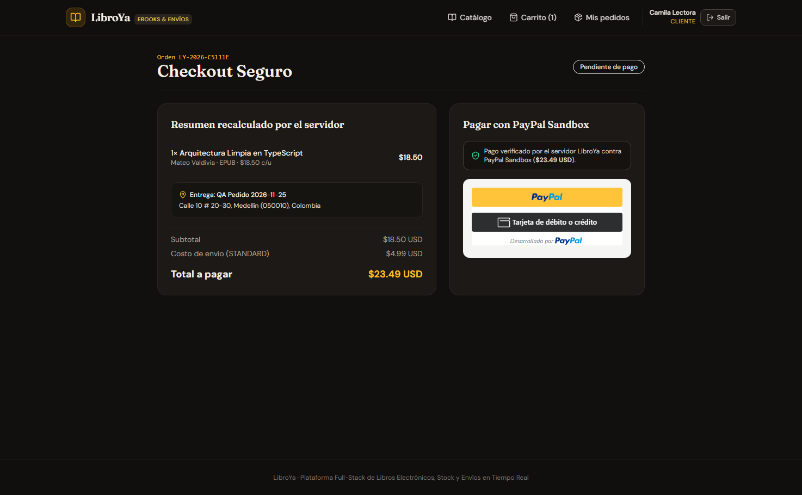
/pedidos)Lista de pedidos exclusivos del usuario autenticado mostrando el indicador "En vivo" (conexión WSS Socket.IO activa), barra de progreso por etapas (Pendiente -> En preparación -> Enviado -> Entregado) y descarga de certificado de licencia digital.
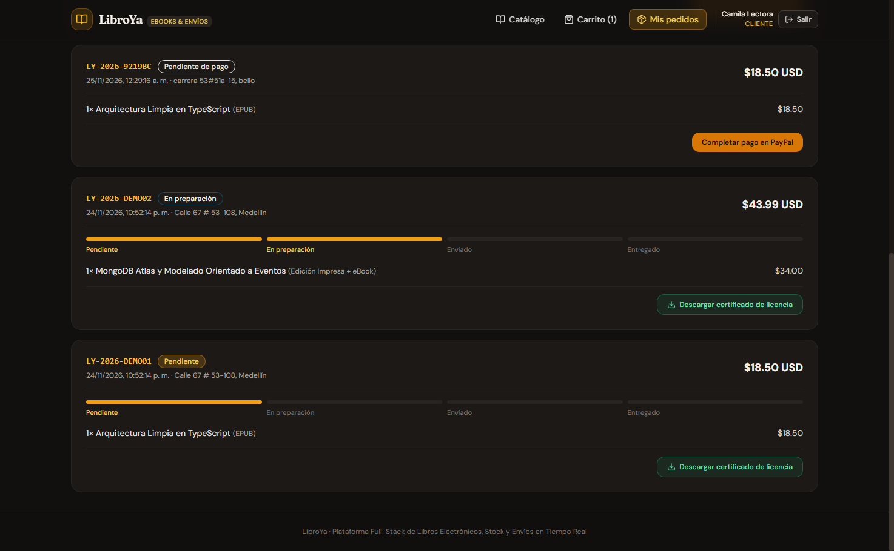
/admin)Evidencia de protección en interfaz y servidor: al ingresar un usuario con rol cliente a /admin, el sistema deniega el acceso mostrando Acceso denegado (403).
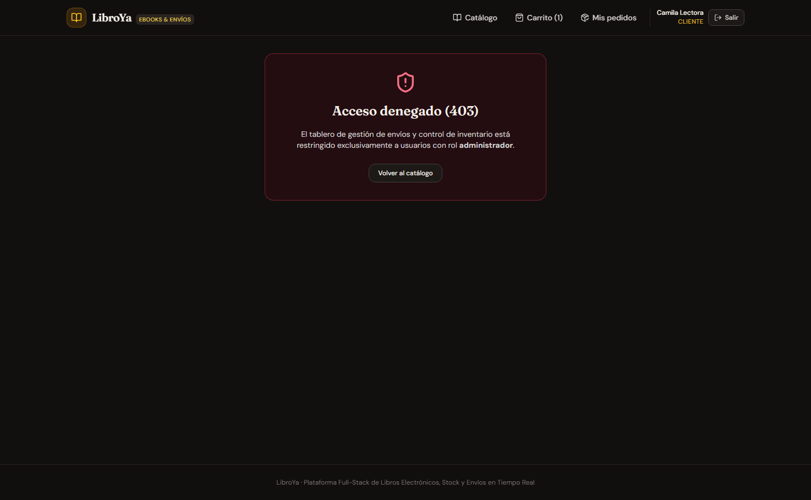
/admin)Vista exclusiva del rol administrador conectada en tiempo real a la sala admin:shipments (En vivo), con las cuatro columnas del flujo logístico (Pendiente, En preparación, Enviado con asignación de guía y Entregado).
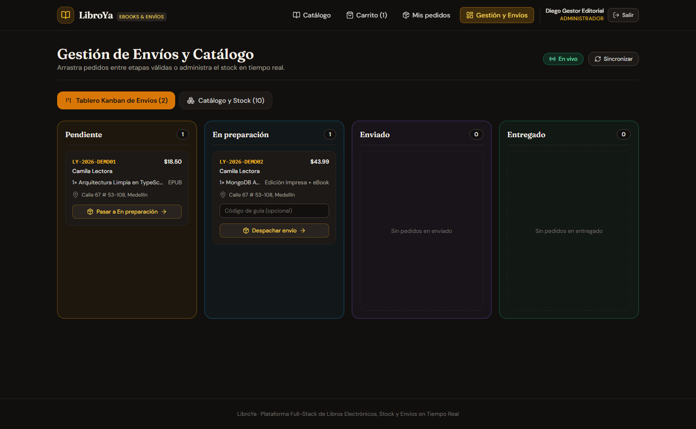
/admin)Panel de inventario en vivo con métricas agregadas (Total títulos, Stock bajo, Agotados), controles rápidos -1 / +1 / +5, pausado/activación de títulos y creación de nuevos libros.
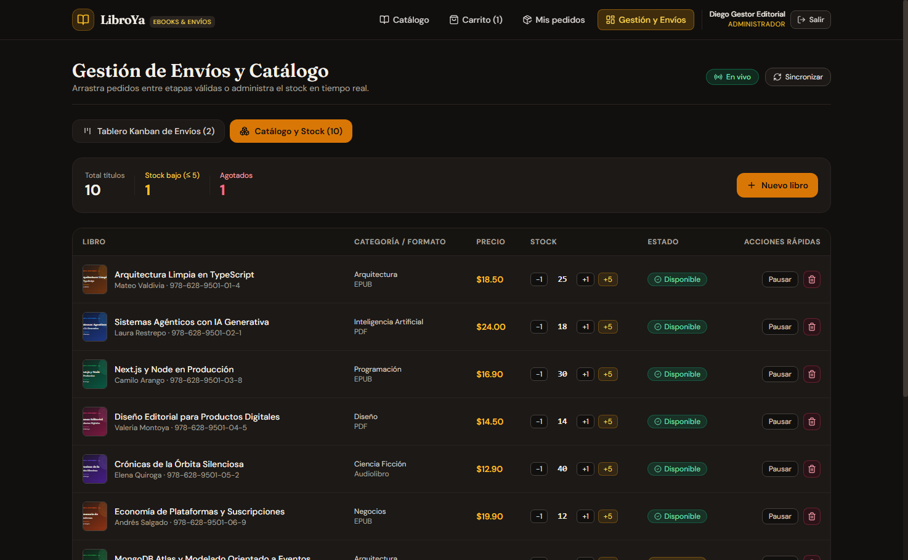
/health)Respuesta pública en vivo de https://server-production-75813d16.up.railway.app/health confirmando servicio operativo y conexión estable a MongoDB Atlas ("db": "connected") sin exponer secretos.
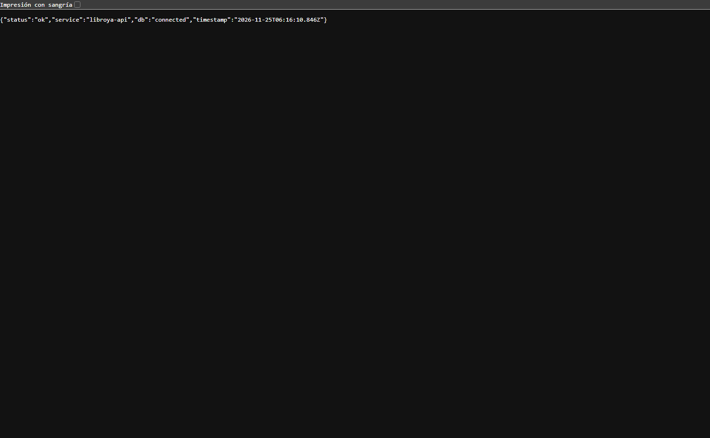
Live Web App)Panel de resultados de TestSprite (Run: Nov 25, 12:52 AM) mostrando el resumen de ejecución (83% Pass Rate, 10 Passed, 2 Failed, 0 Blocked, 12 Total) y el diagnóstico que originó la corrección de CATALOG-003.
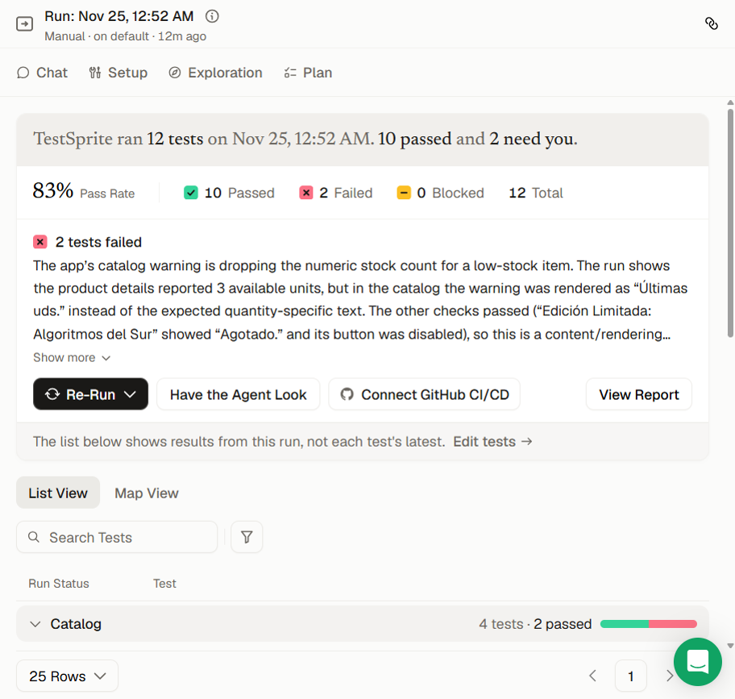
server/ y web/), la escritura de esquemas Mongoose con Zod, el diseño de las vistas responsive en Tailwind CSS, la generación de portadas vectoriales locales, la suite de pruebas en Vitest y la redacción de PRD.md y README.md.MONGODB_URI, JWT_SECRET, PAYPAL_CLIENT_SECRET) quedara en web/, NEXT_PUBLIC_*, PRD.md ni en el historial de Git; se comprobó la conexión real contra MongoDB Atlas, la creación real de órdenes en PayPal Sandbox, la ejecución completa de los 8 tests de backend y la reproducción manual de los fallos reportados por TestSprite antes y después del despliegue en Railway.Authorization: Bearer además de cookie httpOnly para garantizar compatibilidad entre subdominios distintos en Railway sin depender de cookies de terceros.text por defecto de MongoDB por un índice compuesto para evitar el choque con el campo language: "Español".BookCard.tsx tras el hallazgo CATALOG-003 de TestSprite, priorizando legibilidad en tarjetas con formatos extensos.CATALOG-003) que no era visible en pruebas de API puras.